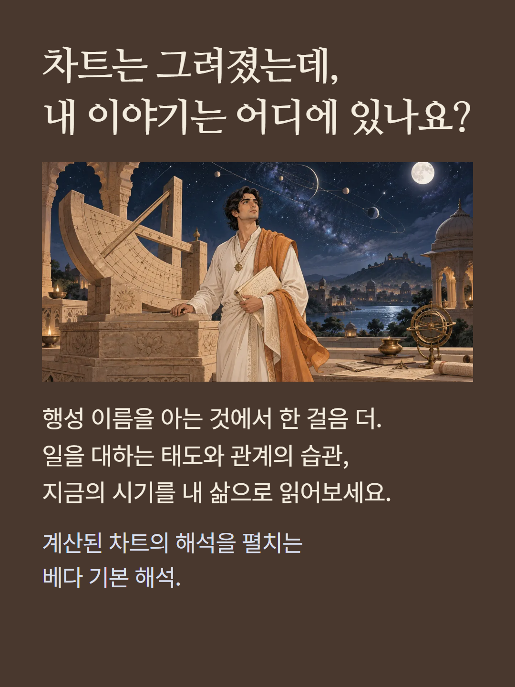
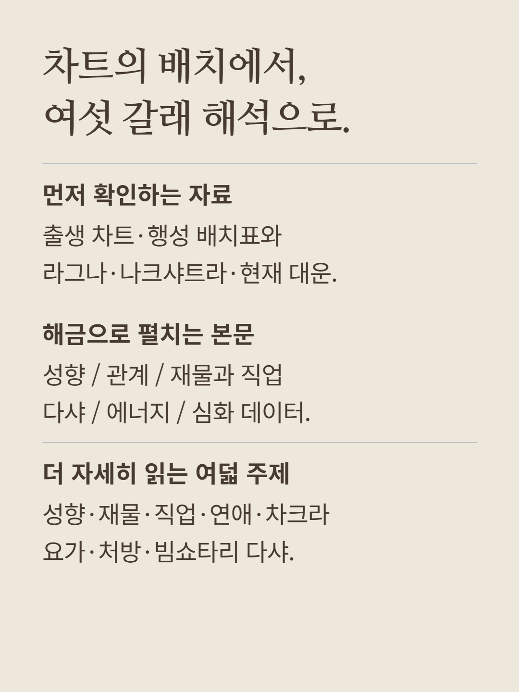
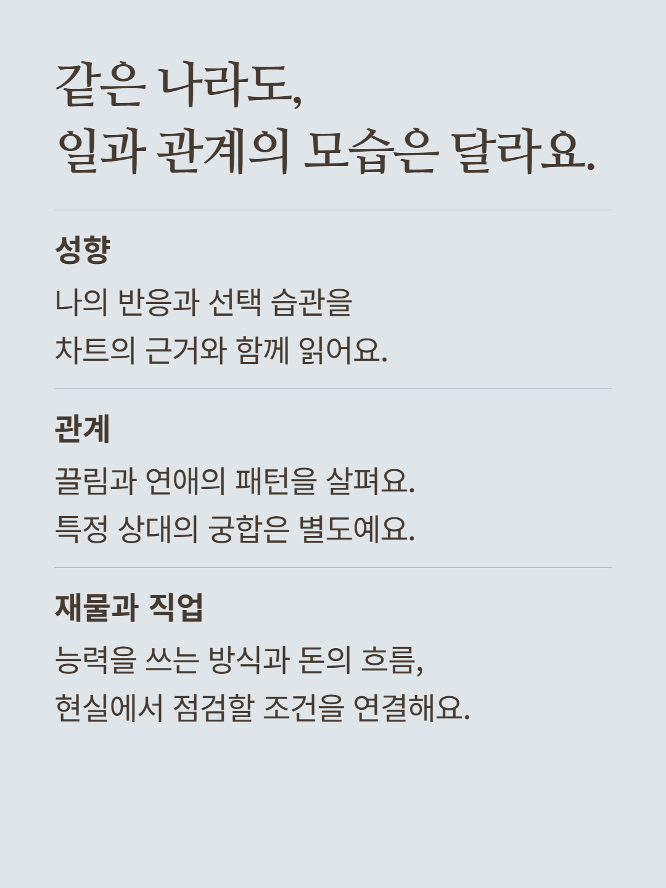
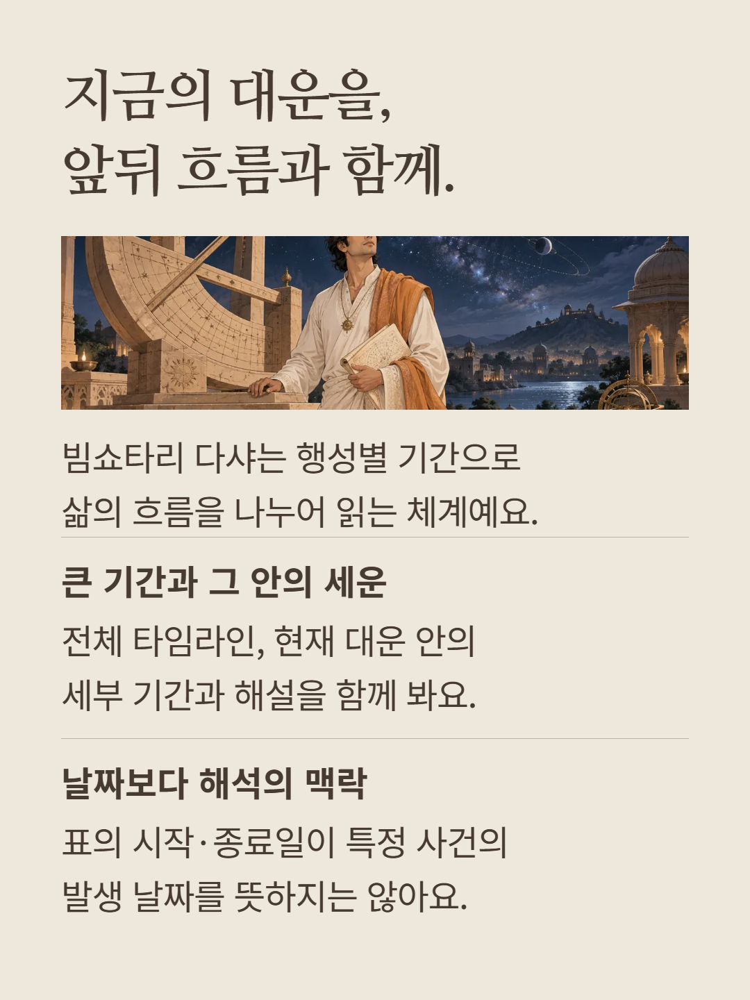
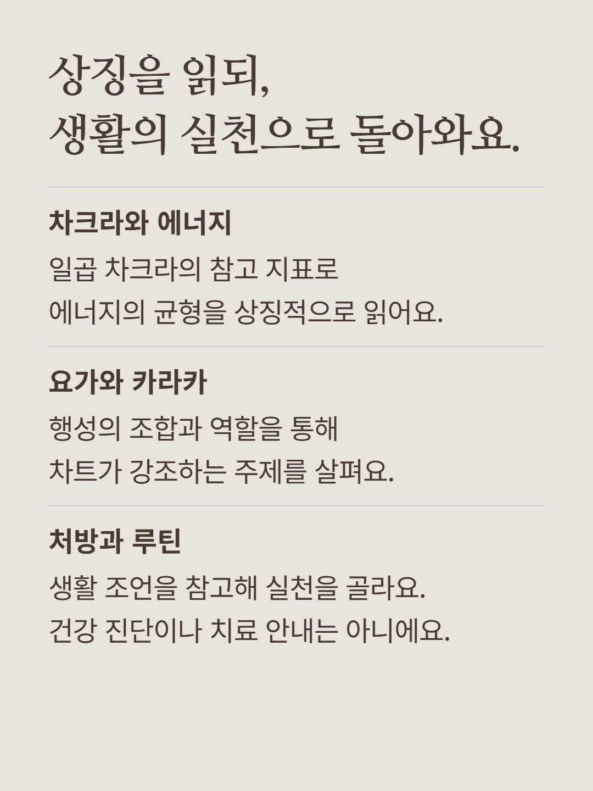
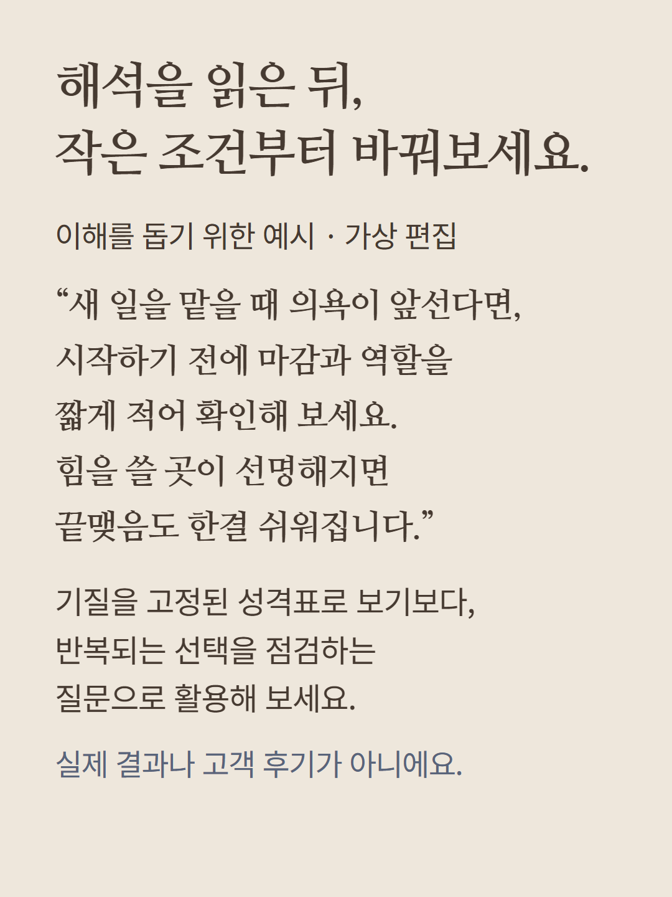
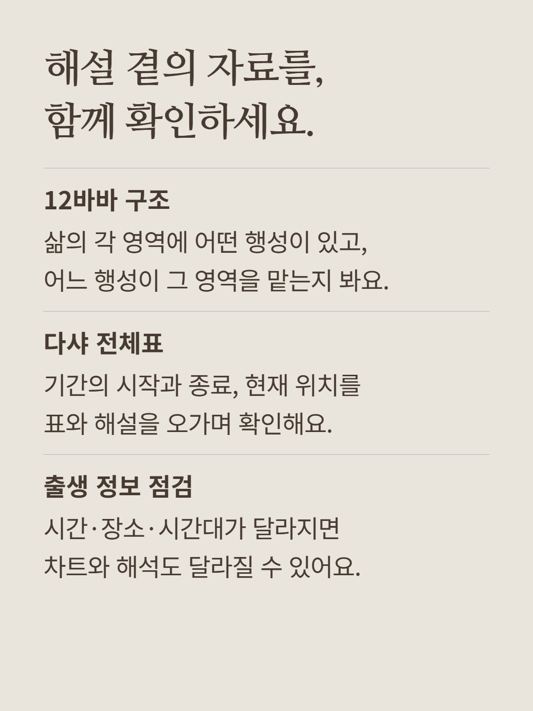
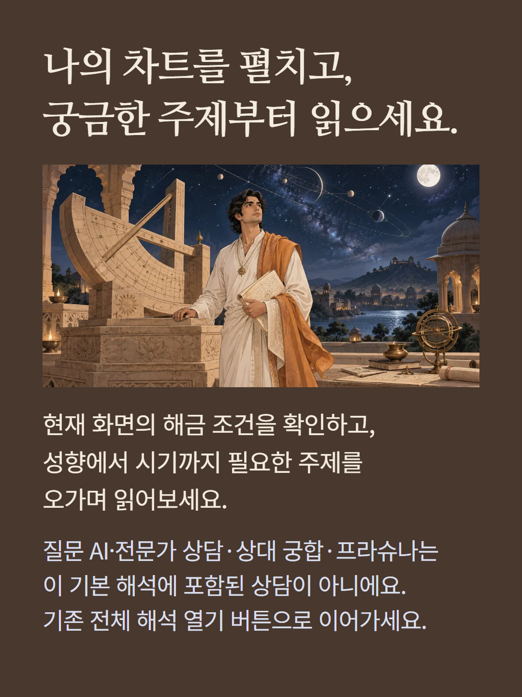

출생 정보를 바탕으로 계산된 베다 차트의 기본 해석을 여는 상품입니다. 기존 화면의 출생 차트·행성 배치·라그나·나크샤트라·현재 대운 자료와 구분하여, 종합 해석 카드와 성향·관계·재물과 직업·다샤·에너지·심화 데이터의 여섯 탭 본문, 성향·재물·직업·연애·차크라·요가·처방·빔쇼타리 다샤의 여덟 상세 주제를 안내합니다. 차트 계산과 미리 작성된 해석 규칙으로 구성되며 질문에 대한 새 AI 답변 상품과는 다릅니다. 다샤의 시작·종료일은 특정 사건을 보장하지 않으며 차크라 지표와 처방은 상징적 해석·생활 참고로서 건강 진단이나 치료가 아닙니다. 출생시간·장소·시간대를 확인해 주세요. 특정 상대와의 궁합, 질문 AI, 전문가 상담, 프라슈나는 별도 상품입니다. 예시는 이해를 돕기 위한 가상 편집이며 실제 결과나 고객 후기가 아닙니다. 현재 화면에 표시되는 해금 조건과 이용권 적용 여부를 확인해 주세요.